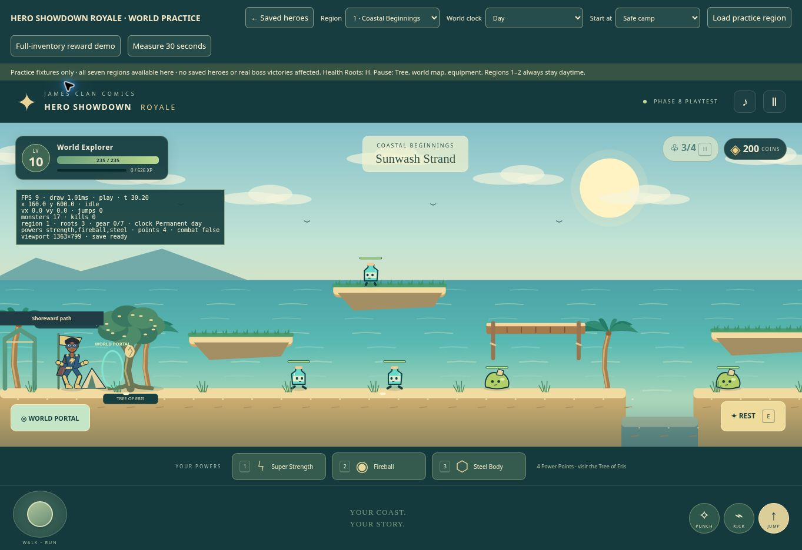
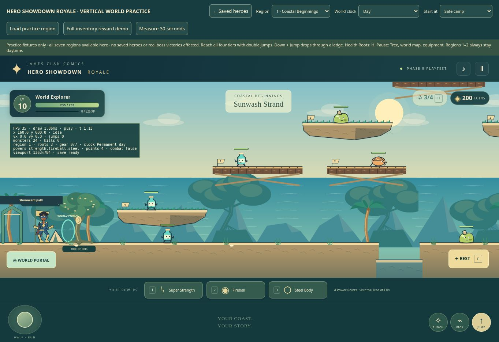

Before & after
Actual browser screenshots of the same coastal starting camp, before and after Phase 9.

Phase 8 baseline
Phase 9 review buildSeven regions · five height levels
These overviews use the same terrain, monster homes, and artwork as gameplay. Each region has three climbing circuits with four elevated tiers, side branches, and a connected ground route. Flight is optional.
Twenty-one regular monsters
Each species keeps its existing stats, attacks and rewards. At half health, its bar turns amber and pursuit continues. No threshold pushback, damage increase or regeneration.
Your hero · every body type
Layered artwork follows the same connected skeleton, planted feet and standardized combat reach. A lightweight cape follows acceleration, jumps, landings and attacks.
Eight Villain Merge suits
Costume motifs remain provisional: the three specified Healthia Villain Merge reference illustrations are absent from the repository. The player's face, hair, skin, eyes and proportions remain their own.
Approved villain artwork
Regional and Legendary encounters reuse the original Healthia sheets. Trash Monster and Ultimate Pollution Boss remain explicitly marked temporary. Giant Scorpion retains its native front-facing, eight-leg articulated rig.
This review page does not modify saved heroes. Authentication deployment, physical-device certification and missing canonical artwork remain outside this build's verified results.